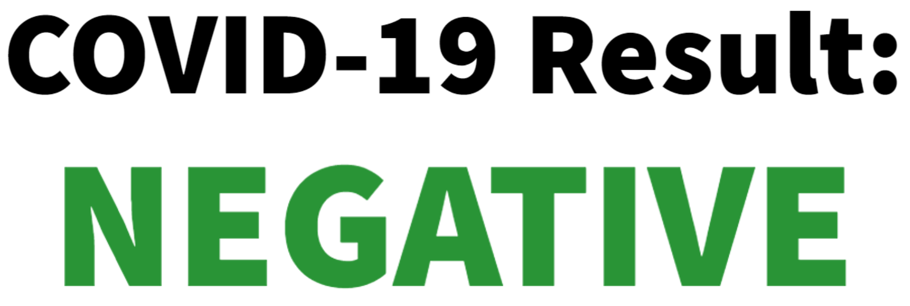

SARS-CoV-2 Viral RNA not detected.
A negative result means the virus that causes COVID-19 was not found in your sample. However, it is possible for this test to give a negative result that is incorrect (a false negative) in some people with COVID-19. This means you could possibly still have COVID-19 even though the test is negative. If this is the case, your healthcare provider will consider the test result with all other aspects of your history such a symptoms and possible exposures to decide how to care for you. It is important you work with your healthcare provider to help you understand the next steps you should take.